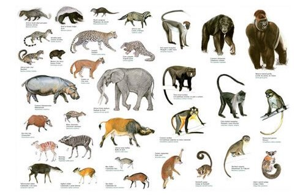
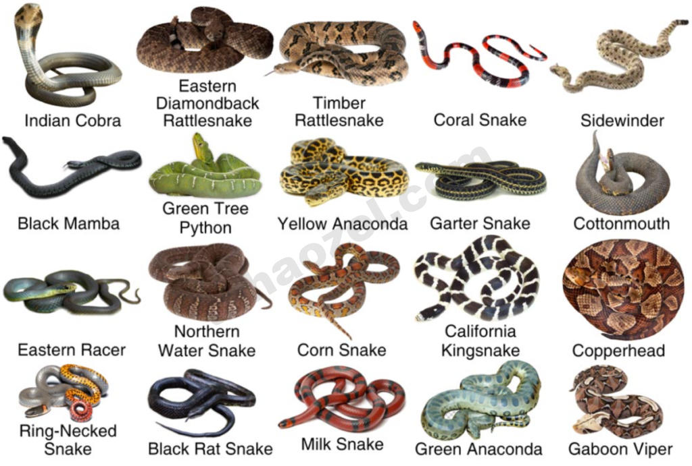
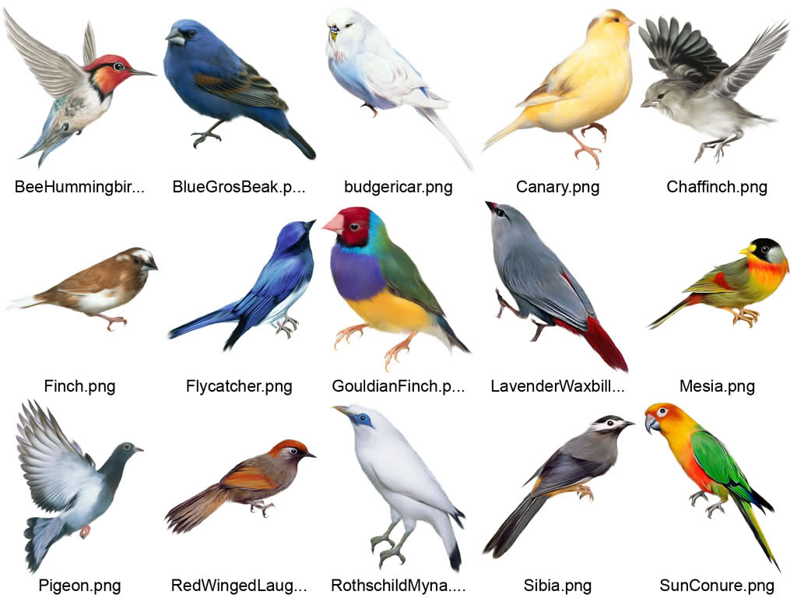

Hayvanlar AlemiHayvanlar alemi bir çok insanın dikkatini çeken ve farklı olan bir topluluktur. Hayvan canlılar dünyasında yaşayan kendi içerisinde gruplara ayrılan organizmaların ortak ismidir. Hayvanlar üst alem olarak Eukaryota ismiyle adlandırılır. Bu ortak isimde anılan canlılar arasında evcil olanları evde insanlar tarafından beslenmektedir. Evcil olmayanların kendi yaşam tarzlarına göre hayat alanları bulunmaktadır. Bu yüzden hayvanlar alemi insanlara çok değişik ve farklı gelmektedir. |
||
|---|---|---|
Memeliler Memeliler (Latince: Mammalia), hayvanlar aleminin insanların da dâhil olduğu, dişilerinde bulunan meme bezleri ve hem dişi hem erkek bireylerinde bulunan ter bezleri, kıl, işitmede kullanılan üç orta kulak kemiği ve beyinde yer alan neokorteks bölgesi ile ayrılan bir omurgalı sınıfıdır. |
Sürüngenler Sürüngenler (Latince: Reptilia), omurgalıların soğukkanlı, yumurtlayarak çoğalan, büyük bir sınıftır. Basitçe yılanlar, kertenkeleler, kaplumbağalar, timsahlar ve tuataralardan oluşur. |
Kuşlar Kuş; tüyleri, dişsiz gagaları, yumurtladıkları sert kabuklu yumurtalar yoluyla üreyen, yüksek metabolizma hızına sahip, dört odacıklı kalpleri ve hafif ama güçlü bir iskelet yapısına sahip, Aves sınıfını oluşturan sıcakkanlı omurgalı hayvanlar grubudur. |